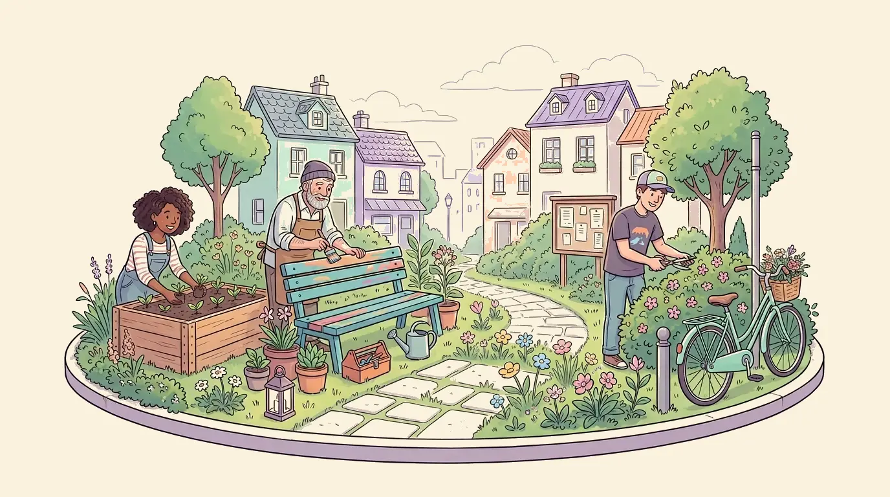
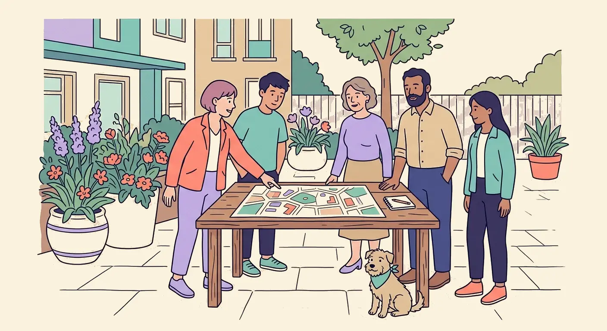
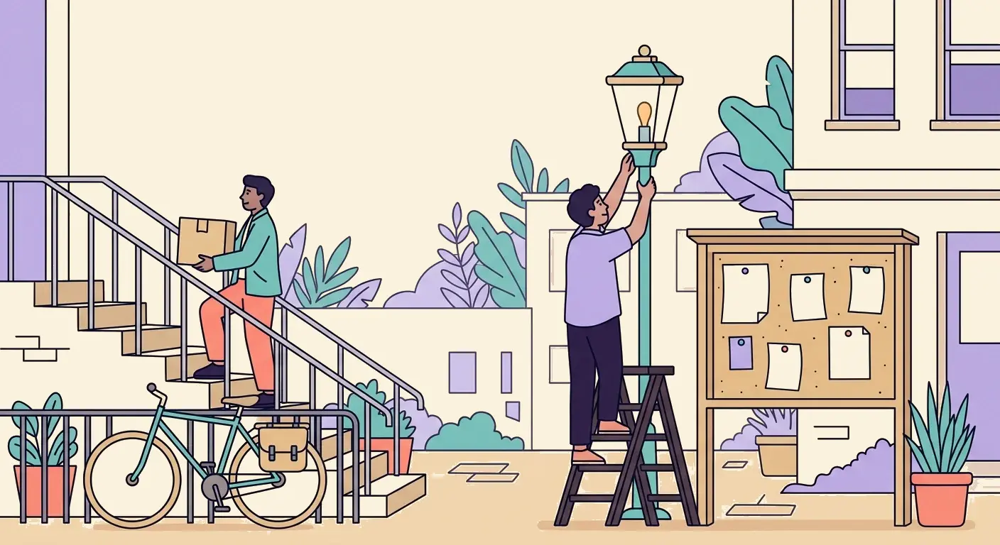
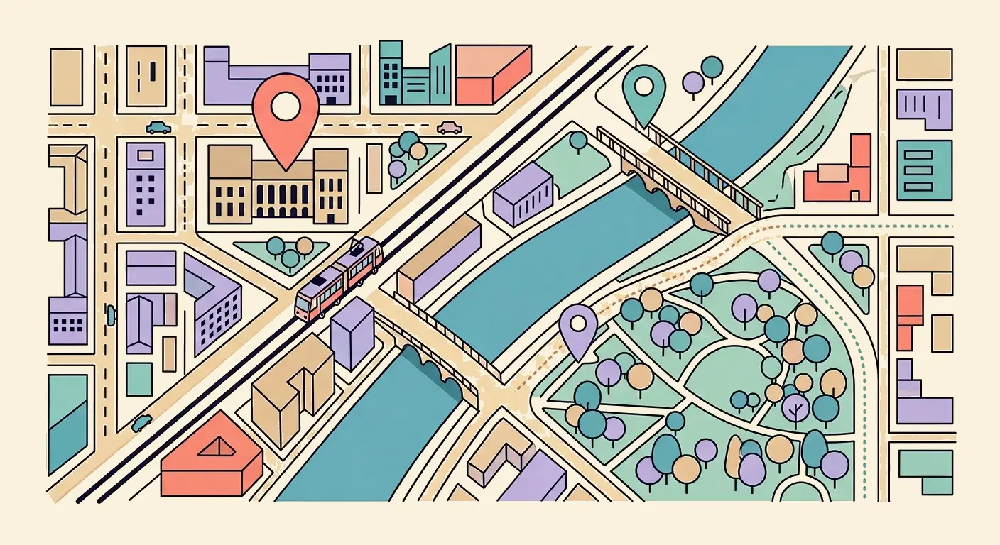
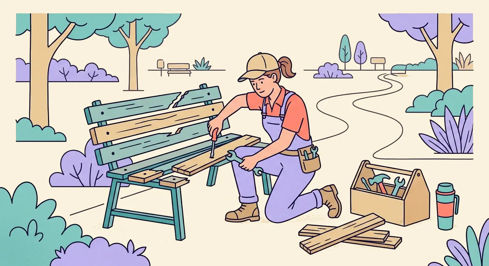
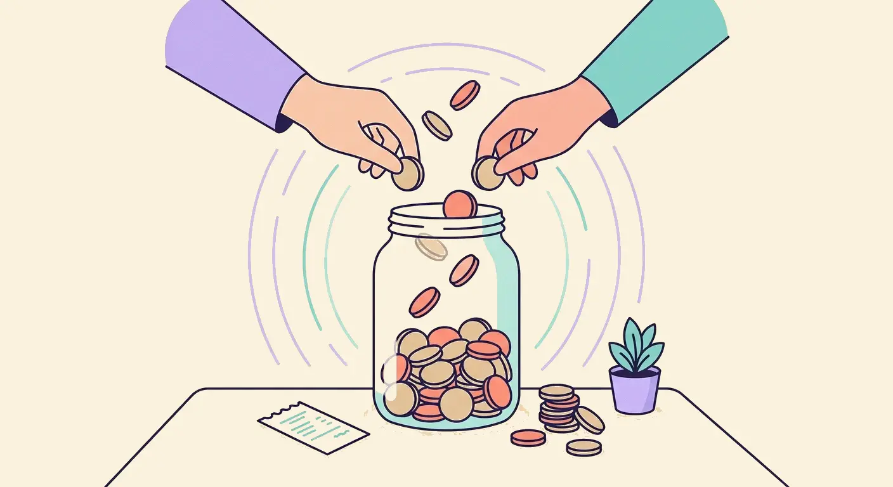
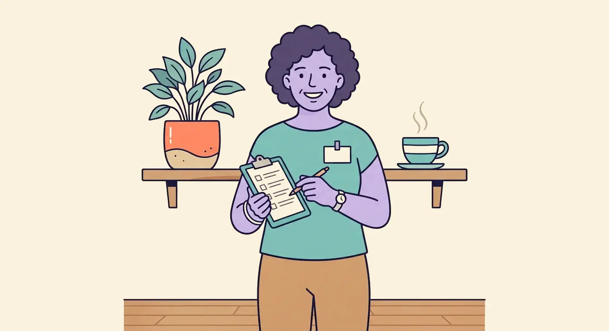

ГОРОД НАЧИНАЕТСЯ С НАС · 21.CITYA BETTER CITY STARTS WITH US · 21.CITYLA CIUDAD EMPIEZA CON NOSOTROS · 21.CITY城市由我们开始 · 21.CITY街は私たちから始まる · 21.CITY도시는 우리에서 시작됩니다 · 21.CITY
Маленькие действия.
Большие перемены.
Вместе.Small actions.
Real change.
Together.Pequeñas acciones.
Grandes cambios.
Juntos.微小的行动。
巨大的改变。
一起。小さな行動が、
大きな変化に。
いっしょに。작은 행동이
큰 변화를.
함께.

Задачи, услуги и городские проекты рядом с домом — для крепкого района.Local tasks, services and projects for a stronger community.Tareas, servicios y proyectos urbanos cerca de casa — para un barrio más fuerte.家门口的任务、服务和城市项目 —— 让街区更结实。家の近くの作業・サービス、まちのプロジェクト。強い街づくりのために。집 근처의 작업·서비스와 도시 프로젝트 — 단단한 동네를 위해.
От первой идеи — до общего результата.
From a first idea to a shared achievement.


Как это работает
Пять шагов: от фото проблемы до публичного чека. Соседи пополняют бюджет, подрядчики присылают предложения, эскроу платит после приёмки.
Квесты рядом
Проекты рядом
Проекты рядом

Проекты и квесты
Городские проблемы с фото и координатами — и задания соседей

Кошелёк
Ваши взносы в бюджеты городских проектов

В бюджетах проектов
€0
деньги уйдут подрядчику из эскроу только после приёмки работescrow releases the money to the contractor only after acceptanceel escrow libera el dinero al contratista solo después de aceptar la obra工程验收之后，钱才会从托管中支付给承包方検収が終わってから、escrow のお金が施工者に支払われます。작업 검수가 끝난 뒤에야 에스크로의 자금이 시공업체에게 지급됩니다

Вы
вместе — лучше.better together.juntos, mejor.一起，才更好。いっしょに、もっと良く。함께면 더 좋아집니다.
Локальный черновик. Фото — сгенерированные плейсхолдеры. Всё хранится локально в вашем браузере, никаких серверов и токенов.Local draft. Photos are generated placeholders. Everything is stored locally in your browser — no servers, no token.Borrador local. Las fotos son marcadores generados. Todo se guarda en tu navegador: sin servidores ni tokens.本地草稿。照片是生成的占位图。所有数据都保存在你的浏览器里，没有服务器，也没有代币。ローカルの試作版です。写真は生成されたプレースホルダ。すべてはブラウザ内に保存され、サーバーもトークンもありません。로컬 초안입니다. 사진은 생성된 자리표시자 이미지예요. 모든 데이터는 브라우저에만 저장되며, 서버도 토큰도 없습니다.